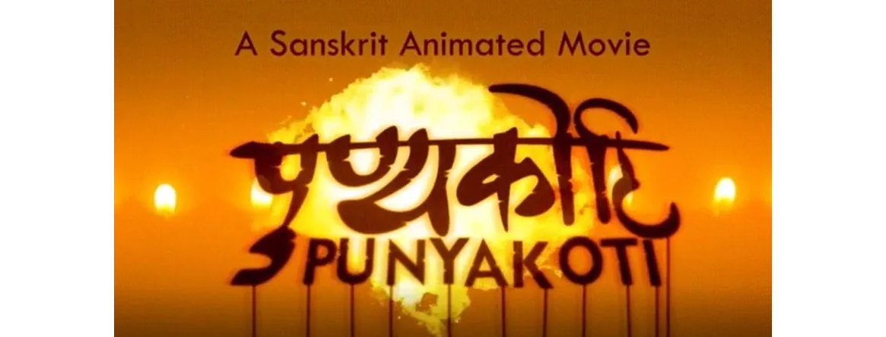

कोरोना-काले globalization of संस्कृतसम्भाषणम्
संस्कृतभारती Canada .. हर्षः
harsht@sbusa.org
- पुण्यकोटि - संस्कृत-विश्वस्य प्रथमं अनुप्राणितचलचित्रम्

- प्रतिदिनं संस्कृतम् - वैश्विकी कथामाला
गतसंवत्सरे (Sept. 2019) एकस्य वर्गस्य Canada देशे online आरम्भः जातः .. तदा तु सप्ताहे एक-वारम् एव .. तत्र कथा-आधारेण सरल-संस्कृतस्य सम्भाषणस्य श्रवणस्य च अभ्यासः भवतु इति चिन्तनम् आसीत् ..
प्रतिदिनं संस्कृतम् - वैश्विकी कथामाला
- Canada - Sep 2019
- Canada, USA - 3 Aug 2020 (विश्वसंस्कृतदिनात्)
- Canada, USA, UK - 14 Sep 2020
- Canada, USA, UK, Singapore, Indonesia - 5 Oct 2020
जयतु संस्कृतम्
pratidinam@sbusa.org
- Slide Creation
Circular Slides Generator (by Hunter Wu) based on impress.js (by Bartek Szopka)